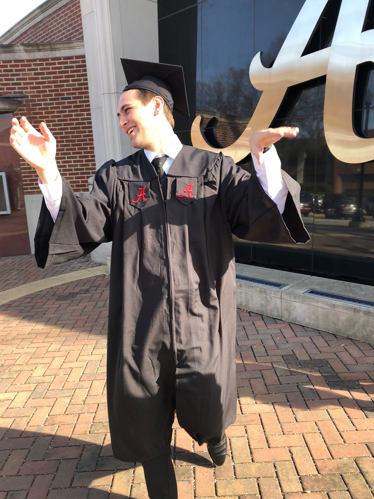

Hello! Welcome to my personal website. My full name is Ryan Stuart Hicks, originally born as Christopher Leckness (middle name unknown). I was born in Birmingham, AL by a lovely woman who was too young to raise two children all by herself. My birth mother's family is originally from Germany. Her grandfather originally moved to the United States with Werner von Braun and his team of rocket scientists to help build the Saturn V rocket which was used during the Apollo missions to help the United States land on the moon. My twin brother, Andrew, and I were both adopted at a very young age by a wonderful family in the Huntsville, AL area. We could not have asked for a better mother and father. My mother is a saint, currently serving the people as a case manager by helping injured employees reenter the workforce. My father is one of my primary role models, currently serving the United States government by working as an engineer for the nation's space and defense industry.
I grew up much like anyone else, playing sports, video games, etc. I was a naturally intelligent and excelled through school while playing a variety of sports such as baseball, football, soccer, and basketball. By the time college crept up, I thought I was invincible. I enrolled at the University of Alabama and began studying to become an Aerospace Engineer. Unfortunately, I was totally unprepared for both the time commitment and the level of maturity required to advance at the collegiate level. I endured many setbacks and emotional hardships, and to make things as clear as possible, I FAILED. It was one of the hardest things in the world to be forced to sit back and watch while the rest of the world moved forward. I say this to clarify that life is not a race. Most of us aren't even sure where the finish line is. So, what exactly are we racing towards? Life is a cycle of experiences that we must learn from in order to grow and to move forward. I was readmitted to the University of Alabama two years later and chose to participate in the Capstone MIS Program. This was one of the best decisions that I have ever made. The University of Alabama's internationally recognized and awarded MIS Program taught me the business skills, technical skills, and soft skills that will enable me to be successful.
I graduated in December of 2017 and have since been working for myself on a personal project called 256 Technology. It is my mission to enable individuals to enable themselves. In order to fulfill this promise to myself, I am currently focusing on building productivity and organization tools that will influence an individual to take control of his or her life. Want to learn more? Although 256 Technology is my life's passion, I am also currently seeking a full-time position with the United States government. My pinnacle goal is to work as a program manager for the U.S. government's space and defense industry while continuing to educate and to inspire anyone that I come into contact with. If you learn anything from reading this, please understand that everything is temporary. If the sun shall rise, then so shall I. Carry on! ☮ & ♥.